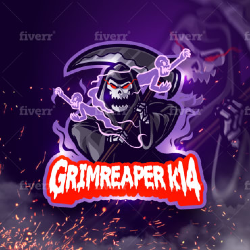

He did excellent job, it only took him two time times to get the mascot I wanted perfectly! Never had a problem of telling him what needed to be change, he listen and get it done right! I highly recommend to hire this guy to make your mascot or brand! :)

Grimreaperk14, United States
Great seller, very easy to work with. The design is absolutely stunning. 5/5 would hire again.
rubbadubdubb, United States
Outstanding work! Fay was super patient and understanding with all my revisions and requests. I would HIGHLY recommend Fay and will definitely come back for any future logo designs.
Nparcell, Unkown